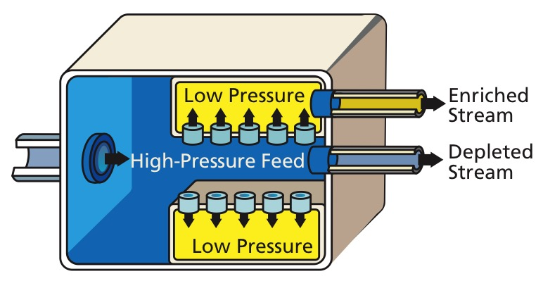

Gaseous Diffusion
 In this process, the UF6 gas is pumped through pipelines and made to go through special filters called "Barriers" or "Porous Membranes". The lighter particles containing U234 and U235 diffuse faster than the heavier U238 particles. The gas is made to go through hundreds of barriers, after which the enritched gas is withdrawn from the pipes, condensed into a liquid and when it is cooled until it becomes a solid. After which, it is finally shipped to fuel fabrication facilities.
Other Methods:
Source: US Nuclear Regulatory Comission